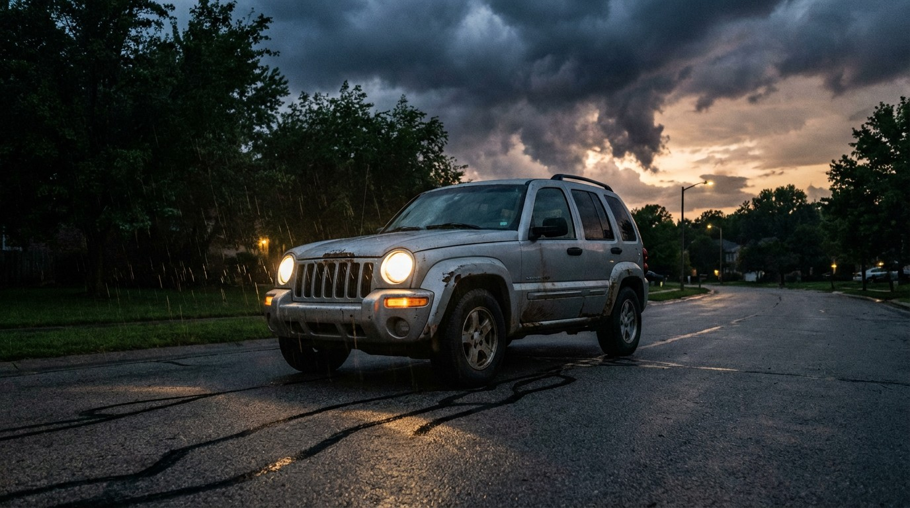

Stellantis Has Recalled the Jeep Cherokee PTU Four Times. It Still Breaks.

A power transfer unit is a compact gearbox that splits torque between the front and rear axles, and in a properly engineered all-wheel-drive system, you never think about it for the entire life of the vehicle. In a Jeep Cherokee built between 2019 and 2023, the PTU disintegrates while you're doing sixty-five on a freeway merge, shredding its internal components until drive power vanishes and the Park gear can no longer hold the vehicle stationary. Your midsize family SUV becomes a 4,200-pound sled on whatever grade you parked it on.
Stellantis first recalled Cherokees for this failure in June 2020, then widened the net in April 2023 when newer models started fragmenting the same way, then expanded again in April 2025 when the second round proved insufficient. On July 15, 2026, 61,711 more 2019–2023 Cherokees entered the recall pipeline, bringing the total to four rounds in six years for the exact same component and the exact same failure mode.[1] Each expansion is an admission that the previous scope missed vehicles whose gearboxes were already cracking apart.
The Cherokee's FARS death rate sits at 1.73 per 100 million vehicle miles traveled, nearly triple the SUV class average of 0.63.[2] Among SUVs still in mass production when FARS was collecting data, only the Chevrolet Tracker and the Trailblazer scored worse, and both are long-discontinued GM orphans running on fumes of fleet attrition. Stellantis sent the Cherokee to join them in January 2024 by shutting down the Belvidere, Illinois assembly plant and killing the nameplate outright. No new model years will arrive to dilute the death rate with safer designs. The recall pipeline is the only engineering investment the Cherokee will ever receive again.
What makes the death rate especially damning is what isn't behind it. Only 18.1% of Cherokee drivers in fatal crashes tested positive for alcohol or drugs, below the SUV class average of 19.5%.[2] Cherokee buyers are families hauling soccer gear, commuters grinding through suburban arterials, weekend errand-runners who picked a midsize crossover because it looked responsible. When a vehicle kills at nearly three times the class rate while its drivers are less impaired than average, the engineering is doing the talking.
Between January 2020 and May 2026, Stellantis logged 387 warranty claims and 30 other field or service records tied to the PTU failure, with at least one confirmed crash and one injury resulting directly from the defect.[1] Those numbers are almost certainly an undercount: drivers who coast safely to the shoulder after losing power rarely file federal complaints, and drivers who don't make it to the shoulder aren't filing anything at all.
The recall remedy, in all four rounds, requires a dealer to inspect and repair the power transfer unit at no cost. Stellantis says it is currently "developing a remedy" for the latest batch, and that phrase, verbatim, has appeared in every single one of the four recall notices stretching back to 2020. Six years of developing a remedy for a gearbox that eats itself from the inside out.
If you own a 2014–2023 Jeep Cherokee: Search your VIN at nhtsa.gov/recalls today, because the recall scope has expanded three times already and your model year may have been added since you last checked. If your Cherokee has all-wheel drive, pay close attention to unusual vibrations or driveline noise and treat any "Service 4WD" dashboard warning as an urgent appointment, not a suggestion. Do not assume a previous recall repair solved the problem permanently. Always engage the parking brake as a redundant hold, because if the PTU sheds its internals while parked, the transmission's Park pawl may be the only thing standing between your Cherokee and the bottom of a slope.
Sources & References
- NHTSA, Jeep Cherokee PTU recall expansion, July 15, 2026. Campaign details via nhtsa.gov/recalls; reporting via MotorSafety.org.
- NHTSA, Fatality Analysis Reporting System (FARS), 2014–2023. nhtsa.gov
- IIHS, Fatality Statistics: Urban/Rural Comparison, posted June 2026, citing 2024 FARS Annual Report File. iihs.org